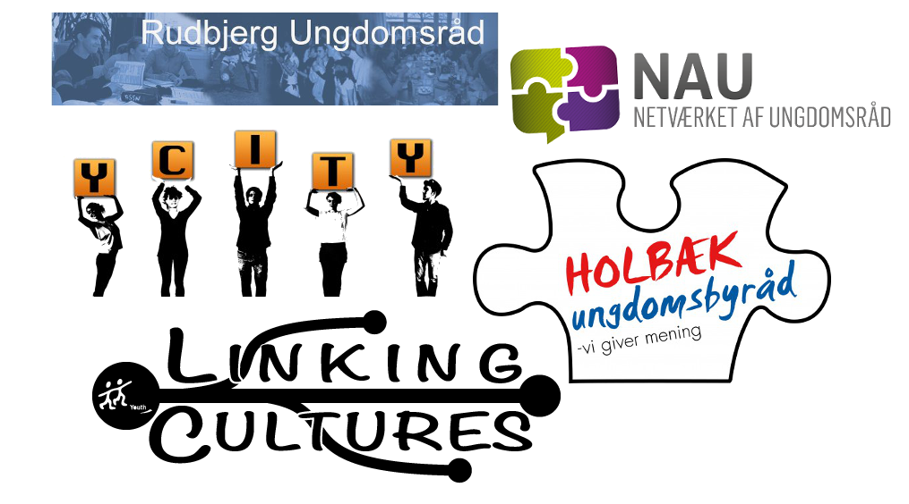
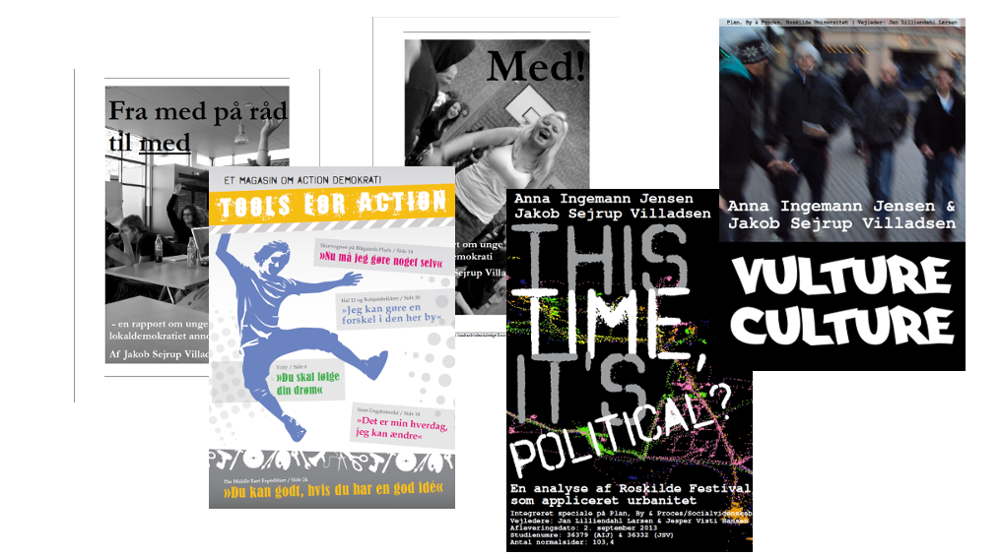

Intro til ErhvervsPhD-projekt
Jakob Villadsen
Min vej til ph.d.-projektet


ErhvervsPhD - hvad er det?
Hvad er en ErhvervsPhD?
Gode erfaringer fra offentlige ErhvervsPhD-projekter
Dannelse - hvorfor?

Det store billede
Kampen om dannelse
Dannelse i et konkurrence-perspektiv
Den nye form for dannelse og disciplinering vokser frem, fordi evnen til at motivere sig selv og tage ansvar er nutidens bidrag til det store samfundsfællesskab i den konkurrencestat, der er på vej til at afløse velfærdsstaten.
Ove Kaj Pedersen
Professor, Copenhagen Business School
Dannelse i et demokrati-perspektiv
(...) som jeg ser det lige nu, bliver de unge flasket op med tanken om, at de ikke skal andet end at arbejde. De skal for alt i verden lykkes med, hvad de kan, og ikke så meget med, hvem de er. Er der intet andet mål i livet end at være så produktiv som muligt?
Simon Axø
Forstander, Testrup Højskole
Det tredje besværlige sted
Min påstand er, at den afgørende strid i dansk uddannelse i disse år er en kamp om dannelsen, og at denne kamp udkæmpes mellem to positioner, der gør hinanden dummere frem for at kvalificere sig i striden.
Stefan Hermann
Rektor, Professionshøjskolen Metropol
Forskningsspørgsmål
Overordnet spørgsmål
Hvorvidt kan ungdomsskolen facilitere politisk dannelse blandt unge?
Underspørgsmål
- Hvordan udfoldes og praktiseres det politiske i de unges hverdagsliv?
- Hvilke strukturelle drivkræfter og barrierer er der for politisk dannelse?